01 — Overview
Project overview
Doorway is a platform with a mission to bridge the gap in social connectivity. We aimed to create a digital space that not only encourages people to foster deeper social connections but also empowers them to take the initiative in reaching out to friends and family.
02 — Problem statement
How might we develop a space that facilitates stronger social connections and encourages taking the initiative to reach out to friends and family?
03 — Design challenge
From long distance to mental wellness
Our project began with the aim of developing a digital space to support mental wellness among friends and family, particularly over long distances. As we progressed, insights from research and interviews showed that potential users preferred a platform centered on fostering social connection as a way to support mental wellness.
That feedback was pivotal. We refined our focus from directly addressing mental wellness to supporting it indirectly, by encouraging conversation and creating a social environment where people feel secure sharing their mental health journeys.
- User engagement
- Creating a platform people would consistently use, given the sensitive nature of mental wellness conversations
- Functionality vs. simplicity
- Integrating meaningful features that promote connection without overwhelming the interface
- Privacy
- A secure space where people can share comfortably without fear of judgement
04 — Research
Interviewing
As a team, we each conducted two interviews, totaling 10 participants. Our problem statement originally aimed at bridging connections over long distances, but as we talked with friends, family, and peers, the conversations naturally shifted from long-distance connection to more immediate concerns around personal well-being.
“I wish there was a way for people to reach out for me to see that I’m just sitting online on my phone so I can know I can tap into them and they’re active and available.”
“A person to listen to my struggles was a good example of support. Someone to just be there for me so I didn’t feel alone and empathize with me.”
“[When] we’re at a level where we can be vulnerable with each other … it makes me feel like I can share my stories and emotions at that moment. It connects our souls.”
“I’m rarely the one to reach out first… usually wait for someone to text first.”
“[I] don’t want to drain others with personal feelings all the time.”
05 — Affinity diagram
Finding the themes
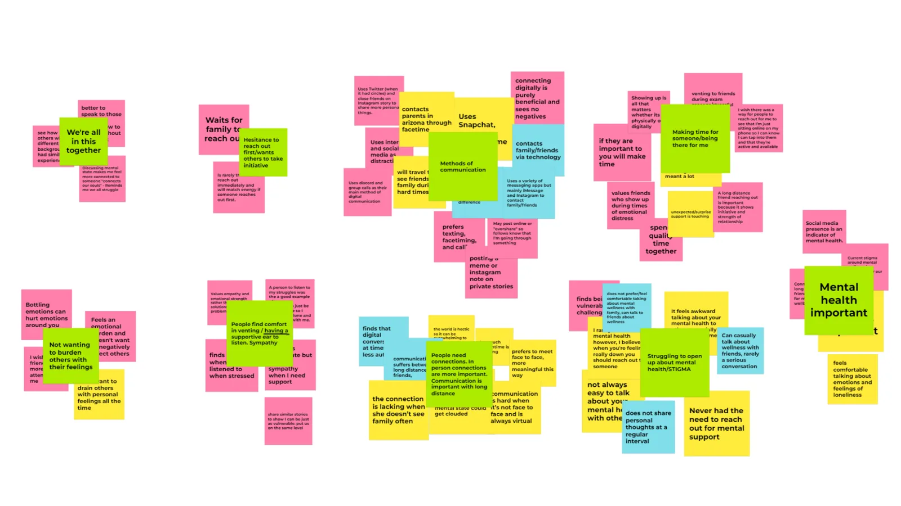
To better understand the problem, we used an affinity diagram to collate and analyze insights from each interview. Visually organizing the data helped us identify common themes across participants’ feedback.
- Support in stressful times
- Support during high-pressure moments is appreciated, and listening and “just being there” matters most
- Reciprocated support
- People are more inclined to engage and reciprocate when someone reaches out first, so the design should encourage proactive outreach
- Taking the initiative
- It’s impactful when a loved one takes the initiative to offer support
Reflecting on the interviews, it became clear the project needed a shift in direction. Bridging long-distance connections didn’t address the broader issue of mental wellness. Enhancing mental well-being through improved social interaction became a clearer, more impactful goal.
06 — Design phase
Personas to prototype
Creating user personas helped us visualize our target users’ needs and behaviors, guiding storyboards that illustrated how people might interact with the app.
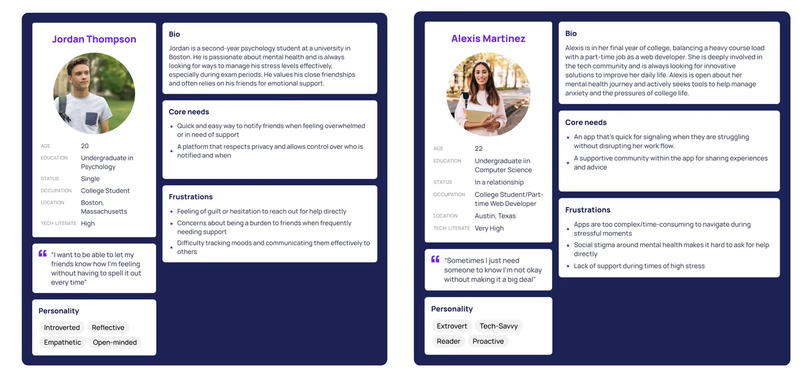
Our design phase was iterative and anchored in user feedback. We moved from low-fidelity paper sketches that laid out structure and flow, to mid-fidelity prototypes that introduced interaction design, to a high-fidelity prototype that polished the interface.
07 — Paper sketches
Paper sketches
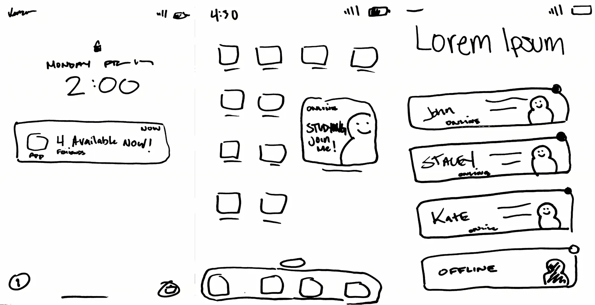
At this stage, our design was heavily inspired by social apps like Locket, which we covered in our competitive analysis.
- Lock screen notifications
- Show your social circle’s presence without opening the app, fostering more spontaneous conversations
- Widgets
- A personalized home screen widget offering a visual snapshot of friends’ current activities
- Home page
- Contacts with clear availability indicators: green dots for available friends, grey for unavailable
08 — Wireframes
The door metaphor
Kaila Long and I spent hours brainstorming at school, exchanging and refining ideas until we landed on a concept that truly sparked our interest. The metaphor of “doors” became the focal point, and we built the project around it.
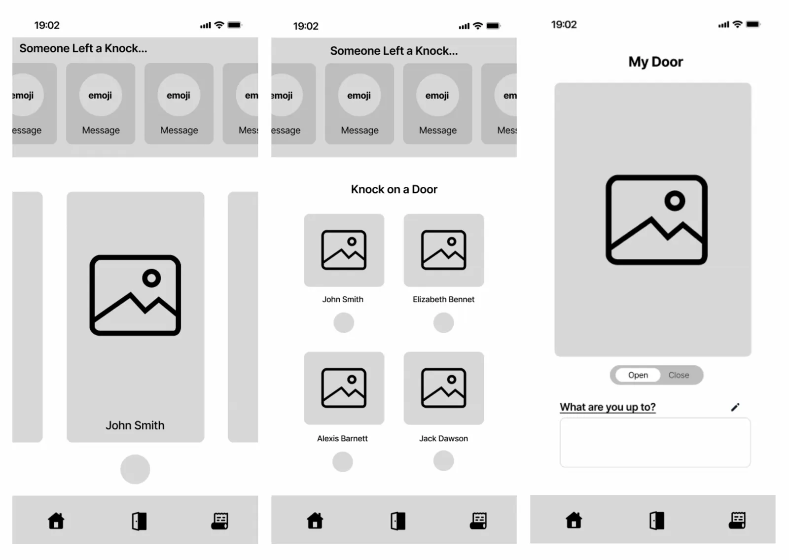
- Home page
- See the status of friends on the platform at a glance: their doors, and who has knocked or left a message on yours
- My Door
- Customize your door to make interactions more enjoyable and light-hearted
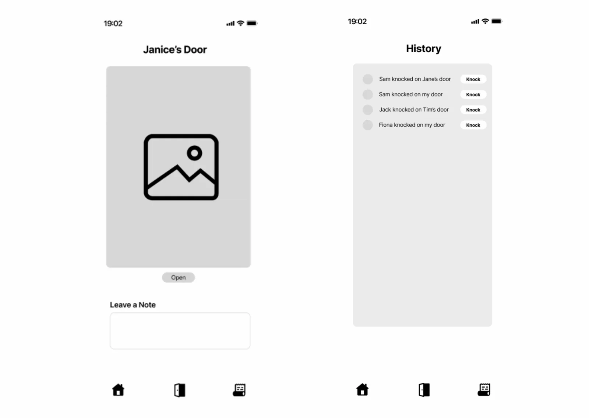
- Viewing a door
- Open a friend’s customized door to knock or leave a short note. Visual indicators show status, like a door set to “open” appearing ajar
- History tab
- See whose doors friends have knocked on, so you can keep track of who reached out and respond when you have time
09 — High-fidelity prototype
High-fidelity prototype
Kaila Long played a pivotal role in developing our initial high-fidelity prototype. Her expertise in Figma helped translate the team’s ideas into a workable prototype.
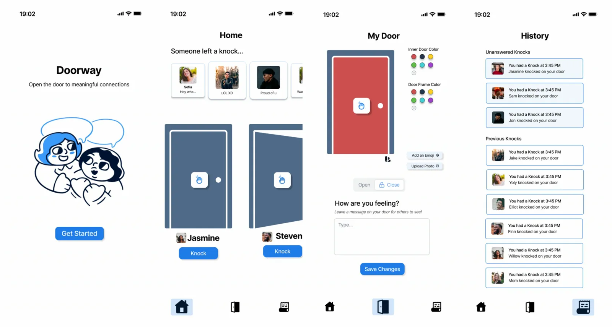
- Landing page
- Home page
- My Door
- History tab
10 — Testing
Usability evaluation
To refine the experience, I ran a mini usability evaluation with my roommate, using tasks like sending a knock, viewing your door, updating your status, and responding to a knock.
Notable findings
- Friends list and settings
- The absence of a visible friends list and a clearly defined settings page were critical issues
- Visual communication
- The “open” versus “closed” door metaphor needed clearer visual cues
Proposed adjustments
- Tailor notifications to door status: passive notes for closed doors, active notifications for open ones
- A closed door doesn’t trigger notifications, but notes left by others appear when the app is reopened
- An open door enables notifications to signal active connection attempts
- Change the interaction for a closed door
This evaluation was instrumental in identifying both strengths and areas for improvement, and gave clear direction for making future iterations more intuitive and engaging.
11 — Final design
Final design
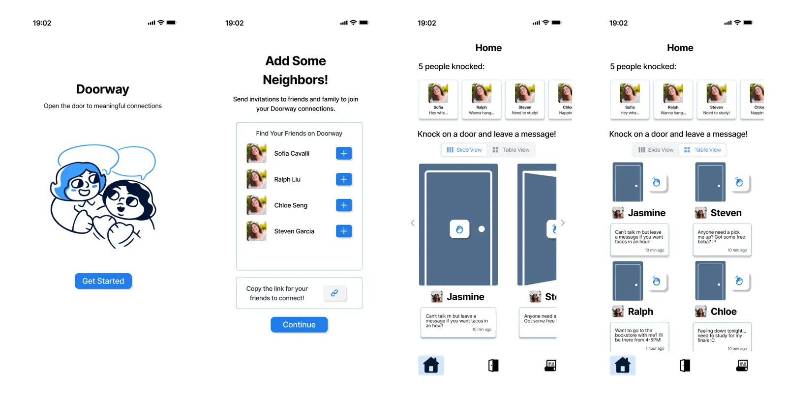
Our final design evolved significantly from peer feedback and usability evaluations. A key addition was a screen for adding neighbors, addressing a gap in the prior version. We also turned the “knock” function into a tangible button on the door itself, represented by a hand emoji, which let us place statuses directly beneath each door.
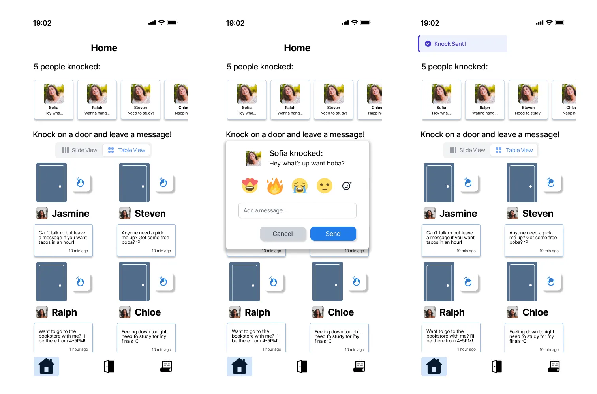
We developed an alternative grid view for doors instead of a sliding carousel, and introduced popup menus for interactions.
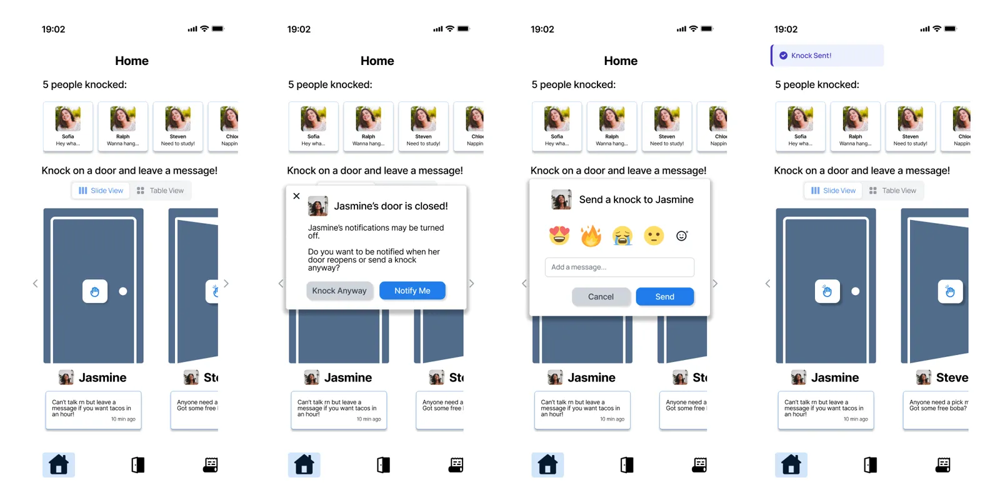
To resolve the ambiguity between closed and open doors from testing, we added a popup that tells you when a door is closed and suggests knocking later or getting notified when it opens. It keeps connection engaging while respecting people’s boundaries.
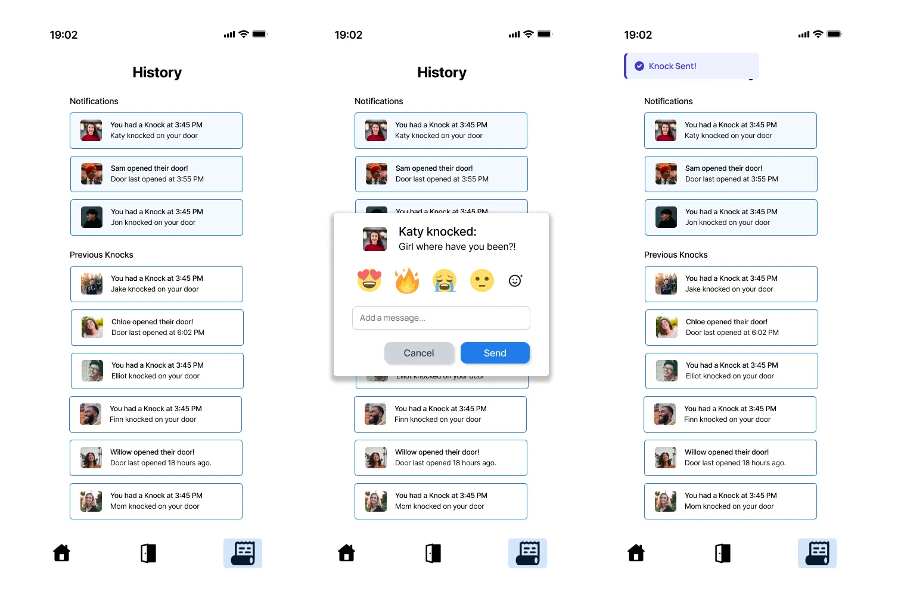
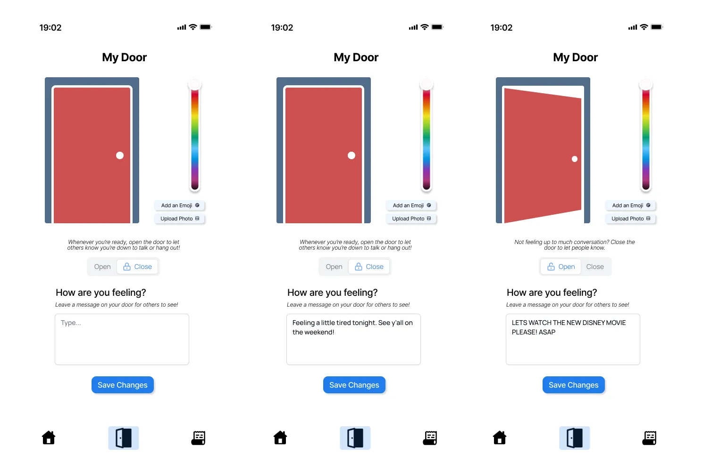
The door page lets you open or close your door and update your status, keeping friends informed about your activities or mood. You can change the door’s color, choose emojis, or upload photos, and the interface suggests status messages as you open or close your door.
12 — Prototype